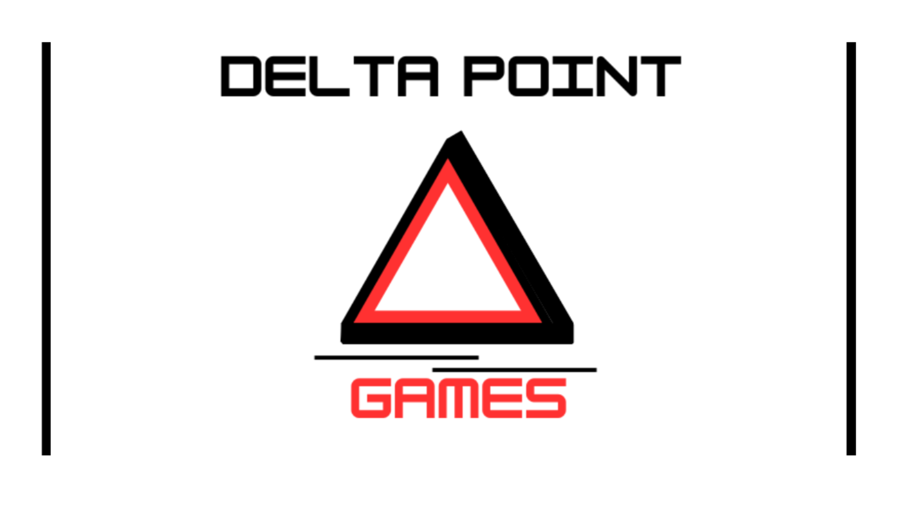

Tämä on Eliaksen sivu.
Olen raisiolainen ohjelmistokehittäjä joka erityistyy etenkin pelikehitykseen.
Opiskelen tällä hetkellä toista vuotta RASEKON ammattikoulussa ohjelmistokehittäjän linjalla.
Olen perustanut DELTAPOINT GAMES indie-peli firman.
Sivu jatkuu kuvan alla!
Olen tuottanut DELTAPOINT GAMES tiimissä monta eri projektia. Niistä on saatavilla esimerkkejä alla: